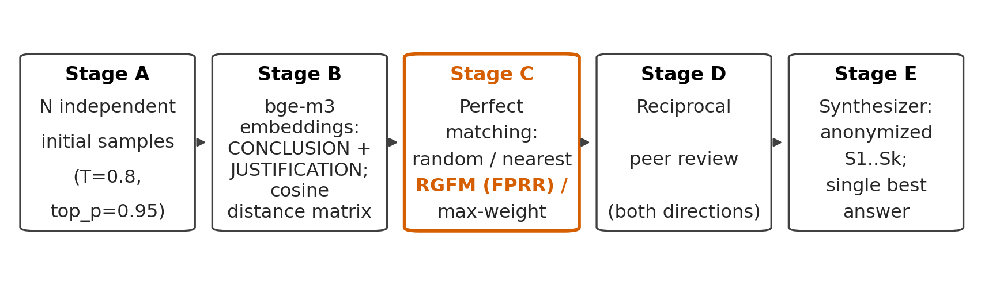
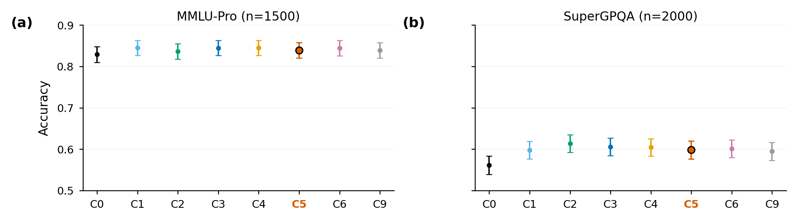
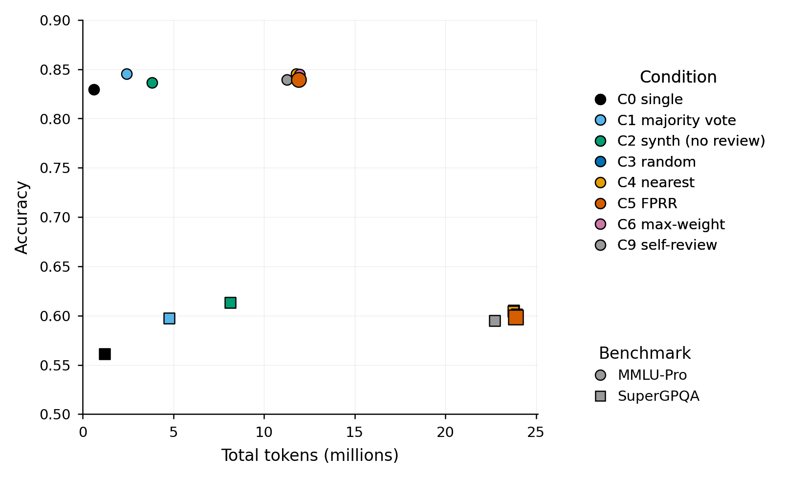
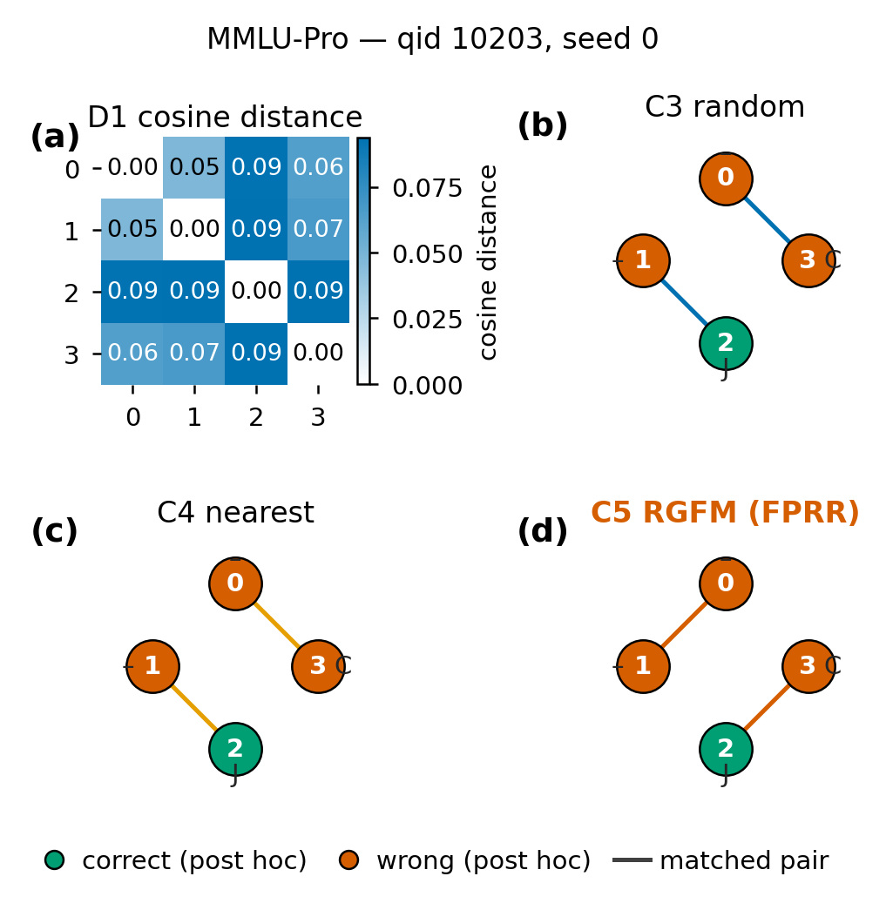
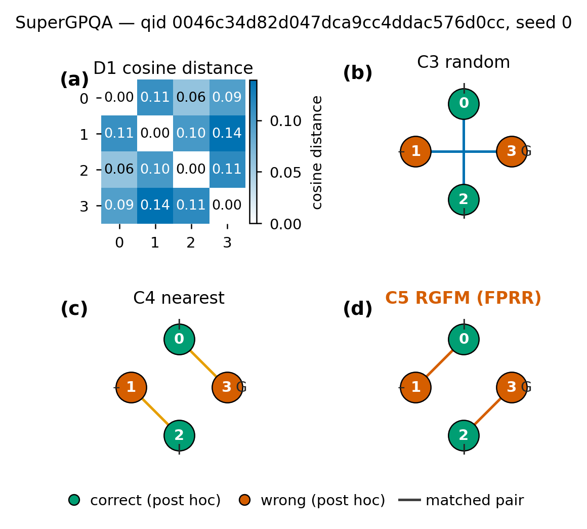
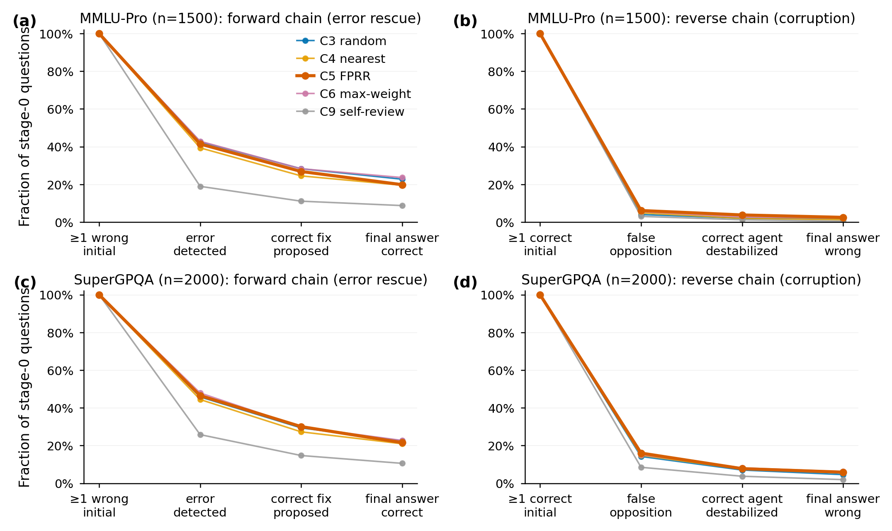
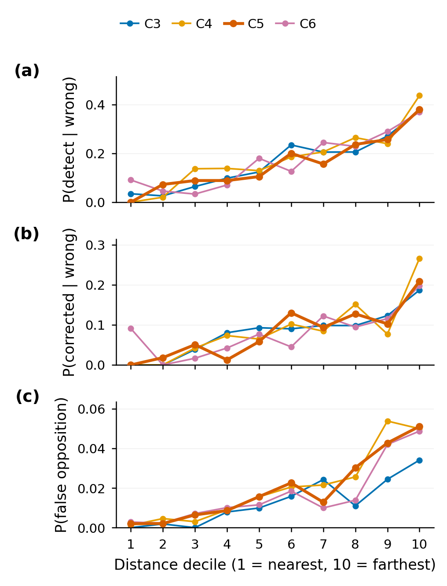
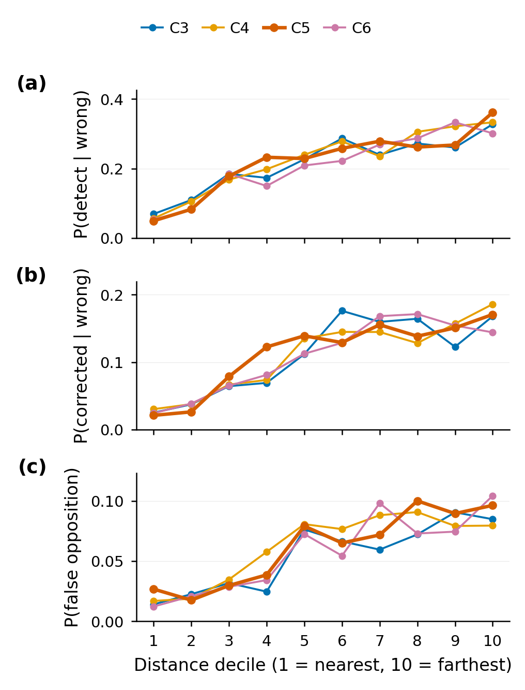
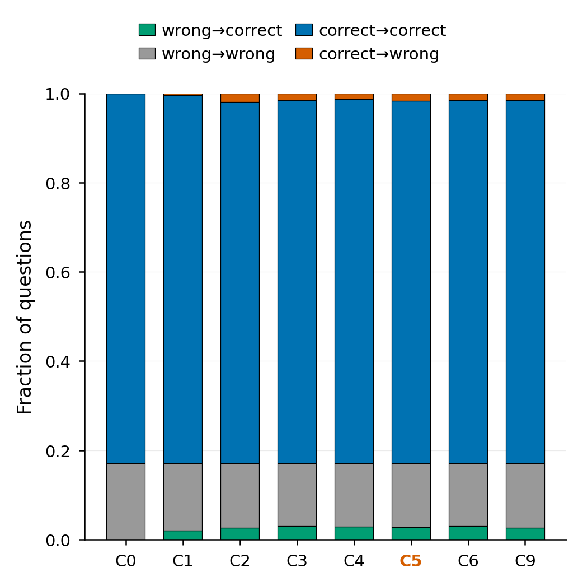
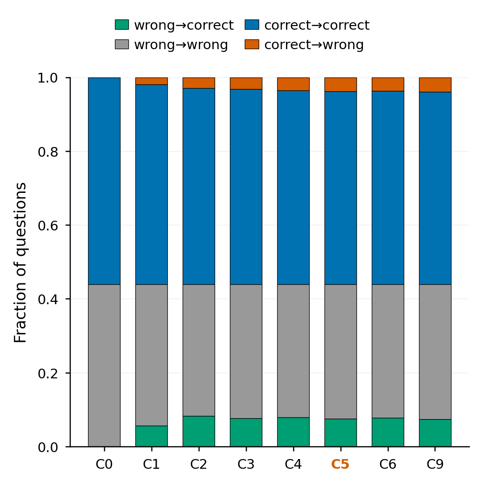

September 2026
Farthest-pair review does not beat random pairing under controlled matching.
Semantic distance raises error detection, not error correction.
Review generates novel correct answers that are rarely delivered.
No-review synthesis beats peer review on the harder benchmark.
Beneficial Transition Ratio quantifies review’s net-zero effect.
Keywords: multi-agent systems; large language models; test-time compute; communication topology; peer review; negative result
Repeated stochastic inference from a fixed language model can substantially improve answer accuracy without touching the model’s weights: self-consistency voting over independent samples [1] and sample-and-vote scaling [4] are the canonical examples. A natural next step is to let sampled instances communicate: multi-agent debate [2] and peer-review schemes [25] allow instances of a model to critique each other’s answers before aggregation.
Yet communication among homogeneous agents has a structural weakness. Instances of the same checkpoint, given the same prompt, do not err independently: they share training data, inductive biases, and failure modes, so their samples form correlated reasoning clusters — groups of answers that share assumptions, strategies, and misconceptions. Broadcast-style communication then tends to reinforce the majority view, which is exactly the view most likely to embody the shared error. Empirically, debate often fails to beat simple voting [6, 7], and diversity-aware variants that prune or retain messages still communicate by broadcast [5, 10].
This paper asks a question that, to our knowledge, has not been isolated experimentally:
Who should review whom? Given \(N\) independent answers from the same model, does the topology of pairwise peer review — specifically, pairing each agent with its most semantically dissimilar peer — extract more correct answers than random pairing, similarity-based pairing, debate, or voting, under identical model, prompt, and inference budget?
We instantiate this question as Farthest-Pair Reciprocal Review (FPRR): embed each response (conclusion + concise justification), compute a pairwise cosine-distance matrix, construct a perfect matching that pairs distant responses (a randomized greedy farthest matching, RGFM, with an exact maximum-weight matching as a variant), run reciprocal pair-limited peer review within each pair, and synthesize a final answer from all answers and reviews. The pipeline is training-free, retrieval-free, and uses one frozen model and one frozen prompt set throughout.
Crucially, our design isolates the causal contribution of the routing rule: all pairing conditions consume the exact same cached initial responses, so differences cannot be attributed to resampling luck; and a compute-matched self-review control separates topology effects from merely spending more inference.
We formalize response-conditioned review topology and provide the first controlled study of disassortative (farthest-pair) reciprocal review, including exact maximum-weight matching, randomized greedy matching, nearest pairing, and random pairing on identical response sets.
A pre-registered null result with mechanistic decomposition: on identical response sets, farthest-pair review matches random pairing, nearest pairing, exact maximum-weight matching, majority voting, and compute-matched self-review within \(\pm 1\) percentage point on both benchmarks, while pair distance monotonically predicts error detection but not error correction.
A mechanistic analysis of what information crosses disassortative edges: stage-wise detection/fix/adoption regressions, forward-vs-reverse review funnels, pair-composition effects, transition-based Beneficial Transition Ratios, and quantified failure modes (destabilization of valid alternatives, shared misconception, judge failure).
A fully logged, cached-response experimental pipeline (seeded pairing, deterministic parsing, paired bootstrap statistics) that isolates the routing rule from resampling luck and is reproducible end to end.
Self-consistency [1] aggregates diverse chains of thought by majority vote; Li et al. [4] show accuracy scales with agent count under voting alone (their similarity measure selects the most similar sample — the opposite polarity to ours). Embedding-similarity pruning of single-agent trace pools (Slim-SC [29], SSDP [30], DeepPrune [31]) improves efficiency but constructs no inter-agent communication. DIVSE [32] diversifies at the prompt level. None condition a communication topology on response-level distances.
Du et al. [2] established broadcast debate among homogeneous instances; ReConcile [3] uses heterogeneous models with confidence-weighted consensus. Controlled replications temper the claims: debate’s benefit is conditional and often matches self-agent baselines [6]; voting can dominate debate [7]; and agents’ debate behavior itself is questionable under controlled logical tasks [8]. All use broadcast or fixed topologies.
Estornell & Liu [5] compute response embeddings and pairwise distances, diagnose echo chambers, and prune to a max-diversity subset — but survivors still broadcast; there is no pairing or reciprocal review. DAR [10] retains a disagreeing subset for broadcast via an LLM filter (embeddings appear only as an evaluation metric). Demystifying MAD [9] initializes pools by maximizing unique-answer counts and trains confidence via GRPO. S\(^2\)-MAD [11] uses response cosine similarity with the opposite polarity (suppressing redundant similar viewpoints). RMoA [12] performs farthest-point-style selection of responses as aggregation inputs, not review partners. Diversity in this literature prunes, weights, retains, or initializes — it never builds a one-to-one review graph.
CortexDebate [13], the nearest work to ours, includes output cosine dissimilarity in sparse debate-graph edge weights (trust-formula composite, heterogeneous models, thresholded broadcast graph, majority vote). DySCo [14] lists reasoning-embedding cosine distance as one of five optional edge signals with one-way top-\(k\) critique. DyTopo [15] routes by similarity of need/offer descriptors. MACE [16] conditions peer selection on n-gram diversity via a bandit. Learned-topology methods (GPTSwarm [17], DyLAN [18], AgentPrune [19], G-Designer [20], MacNet [21], Graph-GRPO [22], Guided Topology Diffusion [23], Codebook Agent [24]) condition on queries, roles, or learned values — never on distances among current responses — and usually require training.
Xu et al. [25] implement reciprocal review on an all-to-all graph; PiCO [26] pairs agents for mutual assessment but pairs them at random (in effect, our random-pairing control); a tournament scheme [27] pairs by skill standing. A 141-study survey [28] reports 88.7% static topologies and no embedding-distance pairing anywhere in its taxonomy. The empty intersection our method occupies — response-distance \(\rightarrow\) farthest perfect matching \(\rightarrow\) reciprocal pair-limited review \(\rightarrow\) synthesis, all training-free over homogeneous same-prompt samples — is documented in our novelty-gate report (NOVELTY_GATE.md), which examined 40+ papers with full-text method-section reading and citation snowballing over 2,235 citing papers of [2].
For each problem \(x\), \(N\) (even) homogeneous agents — the same checkpoint, system prompt, problem text, and decoding configuration — independently produce responses \(r_i = (\text{answer}_i, \text{justification}_i)\), \(i=1,\dots,N\), where the justification is a concise visible reasoning summary (no hidden chain-of-thought is requested or used). Independent stochastic sampling is the only source of diversity.
Each response is embedded as \(e_i = f(\text{CONCLUSION: answer}_i \mathbin{\Vert} \text{JUSTIFICATION: justification}_i)\) with a pinned sentence encoder \(f\) (bge-m3, 1024-d, Ollama digest 790764642607). The question text is never embedded, since identical question text would dominate similarity. The primary distance is cosine distance \(d_{ij} = 1 - \cos(e_i, e_j)\) (metric D1). Ablations: D2 (justification-only embeddings), D3 (hybrid \(\lambda d_{ij} + (1-\lambda)\mathbf{1}[a_i \neq a_j]\), \(\lambda\) tuned on pilot only), D4 (symmetrized NLI contradiction probability, roberta-large-mnli).
distance matrix \(d \in \mathbb{R}^{N\times N}\), seeded PRNG \(U \gets \{1,\dots,N\}\); \(M \gets \emptyset\) draw \(i\) uniformly from \(U\) (seeded) \(j \gets \arg\max_{k \in U \setminus \{i\}} d_{ik}\) \(M \gets M \cup \{(i,j)\}\); \(U \gets U \setminus \{i,j\}\) perfect matching \(M\)
FPRR uses RGFM (Algorithm [alg:rgfm]); the seed is recorded because the greedy rule is order-dependent. Controls: Random (seeded random perfect matching), Nearest (same loop with \(\arg\min\)), and MaxWeight (exact maximum-weight perfect matching \(M^* = \arg\max_M \sum_{(i,j)\in M} d_{ij}\) by exhaustive enumeration over the \((N-1)!!\) matchings; \(N \le 8\)).
For every pair \((i,j) \in M\), agent \(i\) reviews \(j\) and \(j\) reviews \(i\). The reviewer sees the problem, its own answer and justification, and the partner’s answer and justification — nothing else: no other agents’ answers, no ground truth, no embedding distances, no indication of how the pair was formed. The review prompt (frozen, identical across pairing conditions) requires the reviewer to check the peer independently, list correct claims, specific errors, and unverified assumptions, and end with a verdict (PEER CORRECT/PEER INCORRECT) and an updated own answer. The wording explicitly forbids assuming either side is correct, to counter both sycophancy and reflexive disagreement.
One synthesizer call (same model) receives the problem, all anonymized candidate answers (labels S1…SN after a seeded per-question shuffle), and — for review conditions — all pairwise reviews. It never sees ground truth, condition names, distances, or pairing information. Its instructions: do not count repeated claims as independent evidence; evaluate argument quality; use criticisms to locate errors; recover correct minority solutions when justified; ignore rhetorical confidence. The same synthesizer prompt is used in all review conditions.
Per question, FPRR costs \(N\) initial generations \(+\) \(N\) review calls \(+\) \(1\) synthesis call. The compute-matched control (C9) spends the identical budget on \(N\) self-reviews \(+\) \(1\) synthesis over the same cached initials.
All agents and the synthesizer use one frozen served model: deepseek-flash (DeepSeek-V4.1-Flash) via the DeepSeek API, temperature \(0.8\), top-\(p\) \(0.95\), max tokens 1500 (solve/review) / 2500 (synthesis), thinking mode disabled so that the visible justification is the only reasoning artifact; no seed parameter is exposed by the provider. Stochasticity was verified empirically (distinct outputs on repeated identical calls). The model is homogeneous across all agents and conditions; no weights are modified.
MMLU-Pro [35] (test, 12,032 items, CC-BY-4.0) and SuperGPQA [36] (26,526 items, ODC-BY; sampled) as primaries; GSM8K [37] (test) as a sanity check (pilot: 95% single-agent \(\Rightarrow\) ceiling-saturated, excluded from full runs); MATH-500 reserved. GPQA-Diamond and LiveBench were inaccessible from this environment (access-gated); SuperGPQA serves as the recent graduate-level benchmark. Question IDs are fixed by a stratified sampler (sampling seed 42) and shared across all conditions and seeds.
C0 single response; C1 majority vote over \(N{=}4\) cached responses; C2 cached responses \(\rightarrow\) synthesizer (no review); C3/C4/C5/C6 = reciprocal review under Random / Nearest / RGFM / MaxWeight pairings on the same cached responses; C9 compute-matched self-review; C7 one-round broadcast debate (pilot only). All pairing conditions consume identical initial responses per (question, seed).
Pilot: 100 questions per benchmark. Full: MMLU-Pro 500 questions \(\times\) 3 experimental seeds; SuperGPQA 500 \(\times\) 4 seeds. Distance-metric ablation (C5 under D2/D3/D4, 200-question subsets, seed 0, with D3/D4 reusing the D2 cached initials within each benchmark) was run in full except MMLU-Pro D4; the \(N \in \{2,4,6,8\}\) ablation and the pairing-seed variance study (pre-registered, Amendment 8) were not run for budget reasons (§10).
Exact-answer accuracy with a frozen deterministic parser (last FINAL ANSWER: line; unparsed \(\Rightarrow\) incorrect). Paired bootstrap (10,000 resamples over questions) for 95% CIs of accuracy differences; continuity-corrected McNemar tests for C5 vs. {C3, C4, C1, C9} with Holm–Bonferroni correction. Hypotheses H1–H6 were pre-registered (see preregistration.md, including all amendments) before any full-test evaluation.
GSM8K and MATH are old and heavily exposed; we therefore base no claim on them. MMLU-Pro (June 2024) and especially SuperGPQA (January 2025) postdate much training data; SuperGPQA’s graduate-level items and the model’s mid-band accuracy there (61% single-agent in pilot) make it the more sensitive instrument. We nevertheless treat residual contamination as a limitation: it can only inflate absolute numbers, and applies identically to every condition, so paired differences remain interpretable.
Every API call is logged to JSONL (question ID, full prompt, raw output, parsed fields, token usage, latency, timestamp, condition, seeds). Initial responses are cached and shared across conditions; pairing/matching decisions depend only on distances, never on gold labels. Code and configs are versioned (git); analysis scripts are deterministic (seeded bootstrap).
Figure 1 recaps the pipeline (Section 3); throughout this section, all pairing conditions consume identical cached initial responses per (question, seed).

Table 1 reports accuracy on MMLU-Pro (500 questions \(\times\) 3 experimental seeds, \(n=1500\) pooled observations). All \(N{=}4\) aggregation conditions cluster within a 0.8pp band (0.837–0.845); FPRR (C5, 0.839) sits at the bottom of that band together with the compute-matched self-review control (C9, 0.839), 0.6pp below random pairing, nearest pairing, max-weight matching, and plain majority voting (all 0.845). Figure 2 visualizes the near-identical accuracies.
| Condition | Name | Pooled acc | 95% CI | Per-seed acc | |
| s0 / s1 | s2 | ||||
| C0 | Single response | 0.829 | [0.810, 0.848] | 0.824 / 0.834 | 0.830 |
| C1 | Majority vote | 0.845 | [0.827, 0.863] | 0.844 / 0.844 | 0.848 |
| C2 | Ensemble + synth. | 0.837 | [0.818, 0.855] | 0.838 / 0.840 | 0.832 |
| C3 | Random pairs | 0.845 | [0.827, 0.863] | 0.846 / 0.850 | 0.838 |
| C4 | Nearest pairs | 0.845 | [0.827, 0.863] | 0.842 / 0.846 | 0.848 |
| C5 | FPRR (RGFM) | 0.839 | [0.821, 0.857] | 0.844 / 0.836 | 0.838 |
| C6 | Max-weight matching | 0.845 | [0.826, 0.863] | 0.840 / 0.846 | 0.848 |
| C9 | Self-review (matched) | 0.839 | [0.821, 0.857] | 0.838 / 0.838 | 0.842 |
| Comparison | diff (pp) | 95% CI (pp) | McNemar \(b/c\) | \(p\) | \(p_{\mathrm{Holm}}\) |
|---|---|---|---|---|---|
| C5 vs C3 (random) | \(-0.5\) | [\(-1.3\), \(0.2\)] | 13/21 | 0.230 | 0.920 |
| C5 vs C4 (nearest) | \(-0.6\) | [\(-1.5\), \(0.3\)] | 19/28 | 0.243 | 0.920 |
| C5 vs C1 (vote) | \(-0.6\) | [\(-1.5\), \(0.3\)] | 18/27 | 0.233 | 0.920 |
| C5 vs C9 (self-review) | \(0.0\) | [\(-0.8\), \(0.8\)] | 19/19 | 0.871 | 0.920 |
| C5 vs C0 (single) | \(+1.0\) | [\(-0.1\), \(2.1\)] | 41/26 | 0.087 | — |
| C5 vs C2 (no review) | \(+0.3\) | [\(-0.7\), \(1.2\)] | 27/23 | 0.671 | — |
| C5 vs C6 (max-weight) | \(-0.5\) | [\(-1.4\), \(0.3\)] | 16/24 | 0.268 | — |
Table 2 gives the paired analysis. Every primary comparison’s bootstrap CI crosses zero, and all four Holm-adjusted \(p\)-values equal \(0.920\): there is no detectable difference between FPRR and random pairing (H1), nearest pairing (H2), majority voting (H3), or the compute-matched self-review control. Against the single-response baseline, FPRR gains \(+1.0\)pp, which does not reach significance (\(p=0.087\), uncorrected).
SuperGPQA (500 questions \(\times\) 4 seeds, \(n=2000\) pooled) tells the same story at lower accuracy, with one sharper twist (Table 3). FPRR (0.599) is indistinguishable from — and if anything slightly below — random pairing (0.606), nearest pairing (0.605), max-weight matching (0.602), majority voting (0.598), and self-review (0.595); all four primary Holm-adjusted \(p\)-values are \(\ge 0.987\) (Table 4). On this harder benchmark every \(N{=}4\) condition clearly exceeds the single-response baseline (C0, 0.561; C5 vs C0: \(+3.8\)pp, 95% CI [\(+2.3\), \(+5.2\)], \(p<0.001\)), so the ensemble machinery itself helps. But the no-review synthesizer condition C2 (0.614) is the best condition, and here the loss is no longer noise: C2 beats C5 by \(1.5\)pp with a bootstrap CI that excludes zero (\([-2.6, -0.4]\), McNemar \(p=0.010\); a secondary comparison outside the Holm-corrected family, and anti-conservative under cross-seed dependence). On the harder benchmark, reciprocal peer review inflicts a small but statistically detectable net cost relative to simply synthesizing the same cached answers — consistent with the transition analysis of §7.4 (BTR \(= 0.383\)).
| Condition | Name | Pooled acc | 95% CI | Per-seed acc (s0/s1/s2/s3) |
|---|---|---|---|---|
| C0 | Single response | 0.561 | [0.539, 0.583] | 0.546 / 0.572 / 0.568 / 0.558 |
| C1 | Majority vote | 0.598 | [0.576, 0.619] | 0.594 / 0.604 / 0.588 / 0.604 |
| C2 | Ensemble + synth. | 0.614 | [0.593, 0.635] | 0.616 / 0.622 / 0.608 / 0.608 |
| C3 | Random pairs | 0.606 | [0.584, 0.627] | 0.594 / 0.598 / 0.616 / 0.614 |
| C4 | Nearest pairs | 0.605 | [0.583, 0.625] | 0.598 / 0.604 / 0.602 / 0.614 |
| C5 | FPRR (RGFM) | 0.599 | [0.577, 0.620] | 0.598 / 0.602 / 0.596 / 0.598 |
| C6 | Max-weight matching | 0.602 | [0.580, 0.623] | 0.594 / 0.606 / 0.608 / 0.598 |
| C9 | Self-review (matched) | 0.595 | [0.573, 0.616] | 0.602 / 0.586 / 0.588 / 0.604 |
| Comparison | diff (pp) | 95% CI (pp) | McNemar \(b/c\) | \(p\) | \(p_{\mathrm{Holm}}\) |
|---|---|---|---|---|---|
| C5 vs C3 (random) | \(-0.7\) | [\(-1.8\), \(+0.4\)] | 56/70 | 0.247 | 0.987 |
| C5 vs C4 (nearest) | \(-0.6\) | [\(-1.7\), \(+0.5\)] | 54/66 | 0.315 | 0.987 |
| C5 vs C1 (vote) | \(+0.1\) | [\(-1.1\), \(+1.3\)] | 72/70 | 0.933 | 1.000 |
| C5 vs C9 (self-review) | \(+0.4\) | [\(-0.8\), \(+1.5\)] | 68/61 | 0.597 | 1.000 |
| C5 vs C0 (single) | \(+3.8\) | [\(+2.3\), \(+5.2\)] | 151/76 | \(<\)0.0001 | — |
| C5 vs C2 (no review) | \(-1.5\) | [\(-2.6\), \(-0.4\)] | 49/79 | 0.010 | — |
| C5 vs C6 (max-weight) | \(-0.3\) | [\(-1.4\), \(+0.8\)] | 54/60 | 0.640 | — |

Review is expensive and buys nothing here (Table 5, Figure 3). On MMLU-Pro, C5 consumes \(11.89\)M tokens — \(19.7\times\) the single-response baseline and \(4.9\times\) majority voting — for 0.6pp less accuracy than voting; accuracy per million tokens drops from 1.37 (C0) and 0.35 (C1) to 0.07 for all review conditions. SuperGPQA shows the same pattern at comparable token cost per seed (\(23.87\)M for C5 over 4 seeds), where review additionally trails no-review synthesis significantly.
| MMLU-Pro (\(n=1500\)) | SuperGPQA (\(n=2000\)) | |||
| Condition | tokens (M) | acc/Mtok | tokens (M) | acc/Mtok |
| C0 | 0.60 | 1.37 | 1.20 | 0.47 |
| C1 | 2.41 | 0.35 | 4.76 | 0.13 |
| C2 | 3.82 | 0.22 | 8.14 | 0.08 |
| C3 | 11.80 | 0.07 | 23.77 | 0.03 |
| C4 | 11.78 | 0.07 | 23.74 | 0.03 |
| C5 | 11.89 | 0.07 | 23.87 | 0.03 |
| C6 | 11.95 | 0.07 | 23.92 | 0.03 |
| C9 | 11.26 | 0.07 | 22.71 | 0.03 |

H1 (FPRR \(>\) random pairing): not supported. \(-0.5\)pp on MMLU-Pro, \(-0.7\)pp on SuperGPQA; both CIs cross zero (\(p_{\mathrm{Holm}} = 0.920\) / \(0.987\)). H2 (FPRR \(>\) nearest pairing): not supported. \(-0.6\)pp / \(-0.6\)pp (\(p_{\mathrm{Holm}} = 0.920\) / \(0.987\)). H3 (FPRR \(>\) majority vote): not supported. \(-0.6\)pp / \(+0.1\)pp (\(p_{\mathrm{Holm}} = 0.920\) / \(1.000\)). The exact maximum-weight matching (C6) fares no better than the greedy RGFM, and the compute-matched self-review control (C9) reproduces FPRR’s accuracy almost exactly on both benchmarks, so the null is not attributable to matching suboptimality or to the review compute itself.
Because all four pairing conditions review the same cached initial responses, any accuracy difference among them is attributable to the matching alone. There is essentially none: on MMLU-Pro, C3/C4/C5/C6 score 0.845 / 0.845 / 0.839 / 0.845 (spread 0.6pp); on SuperGPQA (\(n=2000\), 4 seeds) 0.606 / 0.605 / 0.599 / 0.602 (spread 0.7pp). Exact maximum-weight matching (C6) is indistinguishable from greedy RGFM (C5), and nearest pairing (C4) — the opposite polarity — ties random pairing. Figure 5 visualizes how differently the four rules wire the same responses; the wiring does not matter for accuracy.


On MMLU-Pro the review conditions (0.839–0.845) sit within 0.8pp of the no-review synthesizer condition C2 (0.837), and C1 voting (0.845) ties the best review condition at a fraction of the cost. On SuperGPQA the ordering inverts: C2 (0.614) is the best condition, above every review condition (0.599–0.606), with C1 at 0.598 — and with four seeds the gap is statistically detectable (C5 vs C2: \(-1.5\)pp, 95% CI [\(-2.6\), \(-0.4\)], \(p=0.010\) uncorrected; Table 4). Reciprocal review therefore adds no value over either aggregation baseline — and on the harder benchmark it subtracts a little.
Self-review with an identical call budget reproduces FPRR almost exactly (0.839 vs 0.839 on MMLU-Pro; 0.595 vs 0.599 on SuperGPQA; C5 vs C9 diff \(0.0\)pp / \(+0.4\)pp, \(p_{\mathrm{Holm}} = 0.920\) / \(1.000\)). Spending the review budget on self-critique is exactly as good — and as limited — as spending it on peer review, so the null is a null of routing, not of budget.
Per the pre-registration, \(\lambda\) for the hybrid distance D3 was fixed at \(0.5\) before the full runs, as the pilot-best value on the higher-headroom benchmark and midpoint otherwise (pilot distance ablation under C5, 100 questions per benchmark, seed 0; pilot data are used for tuning only and are not reported as evidence). Table 6 reports the full 200-question distance ablation (C5 under D2/D3/D4, seed 0; within each benchmark D3/D4 reuse the D2 cached initial responses, so cross-metric paired comparisons isolate the topology induced by each metric). This analysis is exploratory (pre-registration Amendment 8: mechanistic, outside the Holm-corrected primary family).
On SuperGPQA the disagreement-aware metrics beat pure semantic distance: D4 (NLI contradiction) reaches \(0.680\) vs \(0.650\) for D2 (conclusion+justification cosine), and the paired difference D4 \(-\) D2 is \(+3.0\)pp with a bootstrap CI that excludes zero (\([+0.5, +6.0]\)) — but on only \(7\) vs \(1\) discordant questions (McNemar \(p=0.077\)), a single seed, and 200 questions: the signal is real but fragile and needs replication. The mechanism is consistent with §7: under D4 the majority-corruption rate falls six-fold relative to D2 (\(0.008\) vs \(0.048\); D3: \(0.024\)) while the correction rate is the highest of the three metrics (\(0.289\) vs \(0.268\) under D2; review-level false-opposition verdict rates are flat, \(0.047\)–\(0.052\)) — NLI contradiction comes closer to epistemic opposition than embedding cosine, so farthest pairing under D4 picks fights that are more often worth having. On MMLU-Pro all metric differences are null (D2/D3 within \(0.5\)pp of each other and of voting): the saturated benchmark leaves no headroom for any routing signal. MMLU-Pro D4 was not run (budget).
| Benchmark | Metric | C5 acc | C1 acc | C5 \(-\) C1 [95% CI], \(p\) | paired vs D2 [95% CI], \(p\) |
|---|---|---|---|---|---|
| SuperGPQA | D2 (cosine) | 0.650 [0.585, 0.715] | 0.630 | \(+2.0\) [\(-2.0\), \(+6.0\)], \(0.45\) | — |
| SuperGPQA | D3 \(\lambda{=}0.5\) | 0.670 [0.605, 0.735] | 0.630 | \(+4.0\) [\(+0.5\), \(+7.5\)], \(0.061\) | \(+2.0\) [\(-0.5\), \(+5.0\)], \(0.29\) |
| SuperGPQA | D4 (NLI contr.) | 0.680 [0.615, 0.745] | 0.630 | \(+5.0\) [\(+2.0\), \(+8.5\)], \(0.009\) | \(+3.0\) [\(+0.5\), \(+6.0\)], \(0.077\) (7:1) |
| MMLU-Pro | D2 (cosine) | 0.860 [0.810, 0.905] | 0.865 | \(-0.5\) [\(-2.5\), \(+1.5\)], NS | — |
| MMLU-Pro | D3 \(\lambda{=}0.5\) | 0.865 [0.815, 0.910] | 0.865 | \(0.0\) [\(-2.5\), \(+3.0\)], NS | \(+0.5\) [\(-1.5\), \(+2.5\)], \(1.0\) |
| MMLU-Pro | D4 (NLI contr.) | not run (budget) | |||
Not run (budget). The \(N \in \{2,6,8\}\) ablation and the pairing-seed variance study (pairing seeds 1, 2 for C3/C5, 200-question MMLU-Pro subsets) were designed and frozen in the pre-registration (Amendment 8) but could not be executed within the remaining API budget; we report them as missing rather than silently dropping them, and count their absence as a limitation (§10).
The aggregate null raises a sharper question: does the disassortative edge carry any extra signal, and if so, where does it die? We decompose the review stage into two chains that run in opposite directions (Figure 6): a forward chain — a question has at least one wrong initial answer (E0), a reviewer detects the error (E1), a correct fix is proposed (E2), and the final answer is correct (E3) — and a reverse chain — a question has at least one correct initial answer (C0), a reviewer falsely opposes a correct peer (C1), a correct reviewer is destabilized into changing or doubting a valid answer (C2), and the final answer is wrong (C3).

FPRR does shift review traffic onto the pairs where disagreement is possible. Counting directed reviews by reviewer–reviewee correctness, C5 places \(412/6000\) (\(6.9\%\)) of MMLU-Pro reviews on mixed correct–incorrect pairs, vs. \(328\) (\(5.5\%\)) under random pairing and \(320\) (\(5.3\%\)) under nearest pairing — a \(25\)–\(30\%\) relative increase in cross-error edges, matching the exact max-weight matching (C6: \(416\), \(6.9\%\)). On SuperGPQA the shift is smaller: C5 places \(1270/8000\) (\(15.9\%\)) of reviews on mixed pairs vs \(1194\) (\(14.9\%\)) under random pairing and \(1098\) (\(13.7\%\)) under nearest pairing (C6: \(1330\), \(16.6\%\)).
Table 7 stratifies all C5 reviews by pair-distance decile, and Table 8 gives overall review-level outcomes. Detection rises steeply with distance on both benchmarks and under all four pairing rules, with minor local non-monotonicities (Figure 8): under C5, P(verdict INCORRECT \(\mid\) reviewee wrong) climbs from \(0.000\) to \(0.379\) on MMLU-Pro and from \(0.050\) to \(0.361\) on SuperGPQA between the lowest and highest deciles; across C3–C6 the top-decile detection rate spans \(0.368\)–\(0.436\) (MMLU-Pro) and \(0.301\)–\(0.361\) (SuperGPQA). Peer review also detects wrong answers far more often than self-review (C9: \(0.091\) / \(0.135\) vs \(0.19\)–\(0.26\) for C3–C6). Note that C6 — not C5 — attains the highest detection rate on MMLU-Pro (\(0.227\)), yet ties C3/C4 in accuracy: extra detection beyond the random baseline has no aggregate payoff under any routing rule.
| MMLU-Pro (6000 reviews) | SuperGPQA (8000 reviews) | |||||||
| Decile | dist. range | det | cor | f.o. | dist. range | det | cor | f.o. |
| 1 | [0.000, 0.028] | 0.000 | 0.000 | 0.002 | [0.000, 0.034] | 0.050 | 0.021 | 0.027 |
| 2 | [0.028, 0.043] | 0.073 | 0.018 | 0.002 | [0.034, 0.051] | 0.083 | 0.026 | 0.018 |
| 3 | [0.043, 0.056] | 0.089 | 0.051 | 0.006 | [0.051, 0.066] | 0.178 | 0.079 | 0.030 |
| 4 | [0.056, 0.069] | 0.089 | 0.013 | 0.009 | [0.066, 0.078] | 0.233 | 0.123 | 0.039 |
| 5 | [0.069, 0.081] | 0.105 | 0.058 | 0.016 | [0.078, 0.090] | 0.229 | 0.139 | 0.079 |
| 6 | [0.081, 0.094] | 0.200 | 0.130 | 0.023 | [0.090, 0.104] | 0.258 | 0.129 | 0.065 |
| 7 | [0.094, 0.111] | 0.156 | 0.094 | 0.013 | [0.104, 0.119] | 0.279 | 0.155 | 0.072 |
| 8 | [0.111, 0.130] | 0.236 | 0.127 | 0.030 | [0.119, 0.138] | 0.262 | 0.139 | 0.100 |
| 9 | [0.130, 0.161] | 0.256 | 0.103 | 0.043 | [0.138, 0.168] | 0.268 | 0.151 | 0.090 |
| 10 | [0.161, 1.000] | 0.379 | 0.209 | 0.051 | [0.168, 1.000] | 0.361 | 0.171 | 0.097 |
| MMLU-Pro | SuperGPQA (4 seeds) | |||||
| Condition | \(n\) reviews | det | f.o. | \(n\) reviews | det | f.o. |
| C3 random | 5928 | 0.202 | 0.012 | 7561 | 0.241 | 0.054 |
| C4 nearest | 5918 | 0.192 | 0.016 | 7568 | 0.231 | 0.057 |
| C5 FPRR | 5912 | 0.212 | 0.020 | 7570 | 0.256 | 0.063 |
| C6 max-weight | 5902 | 0.227 | 0.018 | 7561 | 0.254 | 0.062 |
| C9 self-review | 5943 | 0.091 | 0.009 | 7668 | 0.135 | 0.037 |


To pin down where distance acts, we fit three logistic regressions on pair distance (pooled C3–C6 reviews): detection of a wrong reviewee, a correct fix conditional on detection, and a correct final answer conditional on a fix existing (Table 9). On MMLU-Pro, only the detection stage is distance-sensitive (\(\beta = +12.2\), \(p<0.0001\)); propagation to fix (\(p=0.20\)) and adoption (\(p=0.84\)) is flat. On SuperGPQA all three stages are significant (\(\beta = +7.5\), \(+1.7\), \(+7.3\); \(p<0.0001\), \(p=0.016\), \(p<0.0001\) respectively) — distance does propagate to resolution there — yet aggregate accuracy still does not move, because the reverse chain (§7.3) scales with the same distance. The precise statement is therefore: distance improves error exposure; whether exposure propagates to resolution is regime-dependent.
| Benchmark | Stage (outcome) | \(n\) | \(\beta_{\mathrm{dist}}\) (SE) | \(p\) |
|---|---|---|---|---|
| MMLU-Pro | P(detect \(\mid\) reviewee wrong) | 4040 | \(+12.20\) (0.75) | \(<0.0001\) |
| MMLU-Pro | P(correct fix \(\mid\) detected) | 796 | \(+1.64\) (1.29) | \(0.203\) |
| MMLU-Pro | P(final correct \(\mid\) fix exists) | 321 | \(-0.52\) (2.66) | \(0.844\) |
| SuperGPQA | P(detect \(\mid\) reviewee wrong) | 14124 | \(+7.54\) (0.37) | \(<0.0001\) |
| SuperGPQA | P(correct fix \(\mid\) detected) | 3161 | \(+1.68\) (0.70) | \(0.016\) |
| SuperGPQA | P(final correct \(\mid\) fix exists) | 1224 | \(+7.30\) (1.52) | \(<0.0001\) |
An initial-response selection oracle — always picking the best of the four cached initial answers — would score \(0.883\) on MMLU-Pro and \(0.697\) on SuperGPQA, vs. \(0.845\) and \(0.614\) for the best actual condition (gaps of \({\approx}3.7\)pp and \(8.3\)pp, computed from unrounded values \(0.8827\) vs \(0.8453\) and \(0.6965\) vs \(0.614\); the rounded table values suggest \(3.8\)pp). Concurrent work reaches the same diagnosis at far larger scale: across 15,336 questions and 81,390 fixed candidate pools, Ji et al. [41] show that correct answers are frequently present in the candidate set yet not selected, and that judge reliability varies with task, generator, and the rarity of the correct answer. Our selection-oracle gap confirms this candidate-supply bottleneck under fully controlled identical response sets, and extends it by measuring what review adds beyond the candidate pool. This oracle, however, is not the ceiling of a deliberation system, because reviewers can generate answers absent from the initial set \(R_x\). They genuinely do: on questions where all four initial answers are wrong (176/1500 on MMLU-Pro, \(11.7\%\); 607/2000 on SuperGPQA, \(30.4\%\)), review produced a correct answer outside \(R_x\) on \(0\)–\(2.3\%\) (MMLU-Pro) and \(3.1\)–\(4.1\%\) (SuperGPQA) of cases across conditions — the review stage’s output is empirically not a function of the initial answers alone.
But delivery is where this new information dies (Table 10). End-to-end, a novel correct proposal reached the final answer in \(1/176\) questions (\(0.6\%\)) under C5 on MMLU-Pro and at most \(9/607\) (\(1.5\%\)) on SuperGPQA (C9; C5: \(8/607 = 1.3\%\)); the “proposed, not delivered” column quantifies the loss — e.g., C3 proposed \(4\) novel correct answers on MMLU-Pro and delivered none, and C5 proposed \(25\) on SuperGPQA and adopted only \(6\) (\(19\) lost). Within the unanimously-wrong subset (120 and 401 questions), every condition’s final answer remains wrong on at least \(99.2\%\) (MMLU-Pro) and \(98.0\%\) (SuperGPQA) of cases: review can create the missing answer, but the pipeline cannot recognize it.
| MMLU-Pro | SuperGPQA (4 seeds) | |||||||
| Condition | novel prop. | final corr. | adopted | prop. not deliv. | novel prop. | final corr. | adopted | prop. not deliv. |
| C3 | 4 | 0 | 0 | 4 | 21 | 8 | 7 | 14 |
| C4 | 3 | 0 | 0 | 3 | 20 | 8 | 6 | 14 |
| C5 | 2 | 1 | 1 | 1 | 25 | 8 | 6 | 19 |
| C6 | 0 | 0 | 0 | 0 | 19 | 7 | 6 | 13 |
| C9 | 1 | 0 | 0 | 1 | 21 | 9 | 8 | 13 |
Our pilot-era working explanation for correct-majority corruption was outlier amplification: farthest pairing preferentially wires the unique wrong outlier to a correct agent. The full data refute it as an aggregate mechanism. Within 3:1 answer splits — controlling for question difficulty by comparing only questions with the same split structure — the singleton is indeed much less likely to be correct than the majority (\(20.8\%\) vs \(57.6\%\) on MMLU-Pro; \(28.4\%\) vs \(44.7\%\) on SuperGPQA): distant, unusual answers are disproportionately wrong. But the endpoints of each question’s max-distance edge are wrong at essentially the base rate (\(17.1\%\) vs \(16.3\%\) for the min-distance edge, base rate \(16.8\%\), MMLU-Pro; \(44.7\%\) vs \(43.6\%\), base \(44.1\%\), SuperGPQA): farthest pairing does not systematically select wrong partners. We therefore retire outlier amplification as the aggregate explanation; the 3:1 result stands only as “outlier answers have low accuracy”, not “FPRR picks bad partners”.
What the reverse chain shows instead is false opposition and destabilization of valid answers. False opposition rises with pair distance (Table 7: from \(0.002\) to \(0.051\) under C5 on MMLU-Pro; up to \(0.104\) under max-weight pairing on SuperGPQA). At the question level (Figure 6, C-side), destabilization of correct reviewers is heavier under C5 than C3 on MMLU-Pro (\(50/1324 = 4\%\) vs \(27/1324 = 2\%\); final-wrong \(33\) vs \(23\)) — C5 sits on top of the MMLU-Pro reverse funnel — while on SuperGPQA the reverse chain is heavy for all review conditions (\(0.07\)–\(0.08\) destabilized). Semantic dissimilarity does not route toward wrong partners; it manufactures opposition to correct ones.
The pre-registered secondary metrics (Table 11) and consensus transitions (Figure 10) quantify the resulting balance. Review conditions recover majority errors more often than voting — but random pairing, not FPRR, is nominally best on MMLU-Pro (recovery \(0.099\); rescue \(0.082\)), and on SuperGPQA the no-review synthesizer C2 (\(0.099\) / \(0.100\)) matches the best review conditions (C4: \(0.098\) / \(0.106\)) with no reviews at all, while C5 is the weakest review condition bar C9 (\(0.089\) / \(0.096\)). Relative to agent 0’s initial answer, MMLU-Pro review conditions flip \(15.2\)–\(18.0\%\) of initially-wrong cases to correct while corrupting \(1.5\)–\(2.1\%\) of initially-correct ones (C5: \(16.0\%\) / \(2.1\%\); C1 voting: \(11.7\%\) / \(0.5\%\)); on SuperGPQA the trade-off is nearly symmetric (C5: \(17.2\%\) vs \(6.8\%\)) — which is exactly why no net gain materializes on the harder benchmark.
| MMLU-Pro | SuperGPQA (4 seeds) | |||||
| Condition | rec | cor | res | rec | cor | res |
| C0 | 0.026 | 0.024 | 0.032 | 0.048 | 0.094 | 0.064 |
| C2 | 0.065 | 0.022 | 0.050 | 0.099 | 0.040 | 0.100 |
| C3 | 0.099 | 0.019 | 0.082 | 0.096 | 0.051 | 0.100 |
| C4 | 0.086 | 0.016 | 0.059 | 0.098 | 0.054 | 0.106 |
| C5 | 0.078 | 0.021 | 0.059 | 0.089 | 0.059 | 0.096 |
| C6 | 0.086 | 0.017 | 0.064 | 0.096 | 0.058 | 0.099 |
| C9 | 0.065 | 0.019 | 0.036 | 0.070 | 0.051 | 0.075 |


That C5 ties the self-review control C9 in accuracy could mean review is redundant — or that it is active in both directions and cancels. The C2\(\leftrightarrow\)C5 question-level transitions decide this: adding reviews to the same synthesis pipeline flips \(27\) MMLU-Pro questions from wrong to correct and \(23\) from correct to wrong (net \(+4\); \(1450\) unchanged), and \(49\) vs \(79\) on SuperGPQA (net \(-30\); \(1872\) unchanged). Review is active, and on SuperGPQA actively net-negative — mirroring the significant C2 \(>\) C5 gap of Table 4. We summarize this as the Beneficial Transition Ratio, \(\mathrm{BTR} = \#\text{rescued} / (\#\text{rescued} + \#\text{harmed})\): \(0.54\) on MMLU-Pro and \(0.383\) on SuperGPQA. (BTR is computed from C2 vs C5 per-question transition counts; it is not a precision over all answer-revision events, which would require a separate audit of every review-induced edit.)
A dilution critique says the aggregate null is uninformative because most questions are unanimous and no topology can act on them. We therefore restrict to the disagreement subset (initial answers not unanimous; \(223\) questions, \(14.9\%\), on MMLU-Pro; \(754\), \(37.7\%\), on SuperGPQA) and the recoverable subset (disagreement questions whose correct answer appears among the initials; \(59\), \(3.9\%\); and \(234\), \(11.7\%\)). Table 12 rejects the dilution rebuttal and licenses no conditional claim either: C5 trails C3 on both benchmarks — by \(3.1\)pp and \(13.6\)pp on the MMLU-Pro disagreement and recoverable subsets, and by \(2.0\)pp and \(1.7\)pp on the corresponding SuperGPQA subsets (C5 vs C4 on SuperGPQA recoverable: \(-3.4\)pp). The direction is now consistently negative across both benchmarks, but every confidence interval crosses zero — where topology has room to act, FPRR shows no benefit and a consistent, non-significant penalty.
| Benchmark | Subset | \(n\) | C3 acc | C5 acc | C5\(-\)C3 (pp) | 95% CI (pp) |
|---|---|---|---|---|---|---|
| MMLU-Pro | disagreement | 223 | 0.498 | 0.466 | \(-3.1\) | [\(-8.1\), \(+1.8\)] |
| MMLU-Pro | recoverable | 59 | 0.475 | 0.339 | \(-13.6\) | [\(-25.4\), \(+0.0\)] |
| SuperGPQA | disagreement | 754 | 0.488 | 0.468 | \(-2.0\) | [\(-4.8\), \(+0.8\)] |
| SuperGPQA | recoverable | 234 | 0.402 | 0.385 | \(-1.7\) | [\(-8.6\), \(+5.1\)] |
Directly answering the paper’s question: farthest-pair edges did carry signal that random and nearest edges carried less of — more detections of genuinely wrong peers (\(301\) vs \(254\) and \(260\) PEER INCORRECT verdicts on MMLU-Pro; detection \(0.212\) vs \(0.202\)/\(0.192\)), concentrated in the high-distance deciles where detection is \(3\)–\(10\times\) the low-decile rate. Three findings summarize where that signal went. (a) Semantic distance reliably increases error exposure; whether exposure propagates to repair and adoption is regime-dependent (MMLU-Pro: detection only; SuperGPQA: all three stages), and the reverse chain scales with the same distance at every stage — so the net gain is zero on MMLU-Pro and negative on SuperGPQA (BTR \(0.54\) vs \(0.383\)). (b) Review generates novel correct answers beyond the initial-response selection oracle on \(0\)–\(4\%\) of all-wrong questions, yet end-to-end delivery is \(\le 1.5\%\), and most proposals are lost between proposal and adoption. (c) The binding constraint is epistemic credit assignment: without asymmetric validation, the system cannot distinguish corrective disagreement from false opposition. Different \(\neq\) instructive.
Four MMLU-Pro questions (all seed 0) illustrate the mechanisms quantified above; full transcripts, distance matrices, and per-condition finals are in results/case_studies_mmlu_pro.md.
A heat-exchanger design question (gold: D). The four agents answer B, E, D, C — a wrong majority (B) with a single correct agent (2). C5 pairs \((0,1)\) and \((2,3)\); agent 2 verdicts agent 3 PEER INCORRECT, and agent 3 updates to D and endorses agent 2 (PEER CORRECT). The synthesizer recovers D, while C0, C1, C2, and C9 all output the majority’s B. This is the pipeline working as designed — though notably C3, C4, and C6 also recover D here, so the success is not specific to farthest pairing.
A polarizer/half-wave-plate stack (gold: J). Agents 0 and 1 fail to produce parseable answers; agent 2 alone answers J, agent 3 answers C. Under C5 (pairs \((0,1)\), \((2,3)\)), all four reviews converge: both agents in the correct pair endorse J, agent 2 flags agent 3 as PEER INCORRECT, and every reviewer updates to J. All aggregation conditions recover J; only C0 (agent 0) remains wrong. Review converts a fragile single correct sample into consensus — but so does plain voting here (the unparseable answers do not vote), again showing topology is not the active ingredient.
A pipe-flow power question (gold: D). Three agents answer D; the outlier agent 2 answers A. Farthest pairing (C5, and identically C6) wires the outlier to correct agent 0. The outlier declares agent 0 PEER INCORRECT and keeps A; meanwhile agent 3, reviewing agent 1’s correct D, switches to H. Faced with a disrupted review record, the synthesizer outputs A for C5 (and C3) — a correct majority destroyed — while C4 and C6 remain D. We present this as an instance of the destabilization mechanism of §7.3 — a distant peer manufacturing opposition to correct answers — not as evidence that farthest pairing systematically selects wrong partners: at the aggregate level it does not (max-distance edge endpoints err at the base rate).
An energy-conservation projectile question (gold: I). All four agents independently answer A, with pairwise distances \(0.099\)–\(0.243\) arising purely from differently worded justifications of the same wrong derivation. All C5 reviews return PEER CORRECT, and every condition — C0 through C9 — outputs A. Embedding distance separates phrasings, not misconceptions; when the error is shared, disassortative review certifies it.
Under identical initial responses, identical prompts, and identical compute, the who of peer review does not matter: farthest-pair, nearest-pair, random, and exact max-weight matchings land within 0.6pp of each other on MMLU-Pro and 0.4pp on SuperGPQA, and none beats majority voting or compute-matched self-review. This extends the emerging picture that communication among homogeneous agents rarely beats aggregation [6, 7] to the routing dimension: it is not only broadcast debate that fails to add value — no pairwise wiring of the same samples does either.
FPRR was designed on the premise that sampled answers form correlated reasoning clusters and that pairing across clusters maximizes diagnostic contrast. The premise holds, but the clusters are too small to route around. On MMLU-Pro, \(85.1\%\) of observations are unanimous (\(77.1\%\) unanimously correct, \(8.0\%\) unanimously wrong), the mean number of unique answers among four samples is \(1.166\), and the mean pairwise cosine distance is \(0.087\); SuperGPQA is more contested but still low-diversity (\(62.3\%\) unanimous, \(1.355\) unique answers, mean distance \(0.095\)). When three agents out of four say the same thing, every matching rule produces nearly the same set of edges up to one pair — which is exactly what the accuracy tables show. Disassortative routing presupposes exploitable disagreement mass; at temperature \(0.8\) with a strong model on saturated benchmarks, that mass is minimal.
The mechanistic results separate two quantities that the debate literature often conflates. Semantic distance robustly increases error exposure: reviewers flag wrong peers up to an order of magnitude more often in the top distance decile than in the bottom one. But propagation of that exposure into repair and adoption is regime-dependent — flat on MMLU-Pro, significant at all three stages on SuperGPQA — and a reverse chain scales with the same distance everywhere: false opposition (up to \(0.10\) in the top decile) and destabilization of correct reviewers (\(4\%\) of questions under C5 vs \(2\%\) under C3 on MMLU-Pro). Notably, the reverse chain is not explained by farthest pairing selecting bad partners: max-distance edge endpoints err at the base rate. The binding constraint on review-based pipelines in this regime is therefore epistemic credit assignment: the reviewer and synthesizer cannot distinguish corrective disagreement from false opposition, because both arrive as distant, confidently-argued answers — and without asymmetric validation, every unit of exposure the topology buys is paid back in destabilization.
Where multi-sample conditions do beat the single baseline — most clearly on SuperGPQA, \({\approx}+4\)pp for all \(N{=}4\) conditions over C0 — the gain is captured equally by voting and no-review synthesis; in fact, on SuperGPQA no-review synthesis significantly exceeds peer review (C2 vs C5: \(+1.5\)pp, \(p=0.010\) uncorrected), so review is a net cost there, not merely a null. Nothing in our results suggests that reciprocal review changes what the model knows; it reweights answers the model already produces, and on these benchmarks voting reweights them just as well at one fifth of the token cost. Reports of review- or debate-based gains should be read against a compute-matched self-review control and a voting floor; in our data, both fully account for the effect.
Several threats to validity qualify these findings.
Compute overhead. Review conditions cost \({\sim}5\times\) the tokens of majority voting and \({\sim}20\times\) a single response for zero aggregate gain; our cost analysis is descriptive and does not test cheaper review variants (shorter reviews, fewer pairs).
Correlated errors are structural. All agents are one checkpoint served by one provider, so same-source correlated errors (shared misconception, \(8.0\%\)–\(21.6\%\) of observations) bound what any within-model review scheme can recover; heterogeneous-model pools may behave differently.
Benchmark contamination. MMLU-Pro and SuperGPQA are public benchmarks and may be partially exposed in training data. Contamination inflates absolute accuracies and compresses headroom; because it applies identically to every condition, paired differences remain interpretable, but the effect sizes we could detect are bounded by the remaining headroom.
Embedding dependence. Distances come from a single encoder (bge-m3) over conclusion + justification text. Embedding distance measures surface-semantic dissimilarity, not logical disagreement — qid 10012 shows identical misconceptions at distance \(0.24\). The exploratory metric ablation (Table 6) mitigates this only partially: it is single-seed, 200 questions per benchmark, and MMLU-Pro D4 is missing, so the D4 advantage on SuperGPQA requires replication before it can weigh against the primary null.
Judge and synthesizer bias. The synthesizer is the same model as the agents and may share their biases (e.g., toward confident or verbose answers); its prompt was frozen across conditions, so this bias cannot explain condition differences, but it shapes all review-condition outcomes.
Single model, single decoding configuration. One checkpoint, one temperature (\(0.8\)), one \(N\) in the main runs; the provider exposes no seed parameter, so API nondeterminism is not seed-pinnable (all stochastic elements we control — sampling, pairing, shuffles — are seeded and logged). The null may not transfer to higher-diversity regimes (higher temperature, heterogeneous ensembles, harder or less saturated tasks) where disagreement mass is larger.
Scope and dependence. Two benchmarks; SuperGPQA rests on four seeds (vs three for MMLU-Pro). Cross-seed observations share questions, so pooled bootstrap CIs and McNemar \(p\)-values are mildly anti-conservative — which, if anything, makes the null conclusions conservative for the primary comparisons, none of which is near significance. The pre-registered \(N\)-ablation and pairing-seed variance study (Amendment 8) were not run for budget reasons, so we cannot quantify how sensitive the null is to \(N\) or to pairing randomness; the distance ablation is single-seed.
Under the pre-registered decision criteria, this study lands in Result category D — a null result: on identical cached responses, farthest-pair reciprocal review is statistically indistinguishable from random pairing, nearest pairing, exact max-weight matching, majority voting, and compute-matched self-review on MMLU-Pro (final, 3 seeds) and SuperGPQA (4 seeds), with all primary effect sizes within \(\pm 1\)pp and all Holm-adjusted \(p\)-values \(\geq 0.92\). Who reviews whom does not matter — in this regime. If anything, review is slightly worse than no review on the harder benchmark (C2 \(>\) C5 by \(1.5\)pp, \(p=0.010\) uncorrected). One exploratory note qualifies, but does not change, this classification: in the single-seed distance ablation, the disagreement-aware NLI-contradiction metric (D4) outperforms pure semantic distance on the harder benchmark (D4 \(-\) D2 \(= +3.0\)pp, CI \([+0.5, +6.0]\), \(7\) vs \(1\) discordant; Table 6) — a first hint that epistemic opposition, not textual difference, is the quantity worth routing on, connecting this null to work on disagreement-aware routing.
The mechanistic analysis is, we believe, the durable contribution. Semantic distance reliably increases error exposure across both benchmarks and all pairing rules, but whether exposure propagates to repair and adoption is regime-dependent — and the reverse chain of false opposition and destabilization scales with the same distance at every stage, so the net gain is zero or worse. Review is neither redundant nor bounded by the initial answer set: it flips questions in both directions (BTR \(0.54\) / \(0.383\)) and generates novel correct answers on \(0\)–\(4\%\) of all-wrong questions, yet end-to-end delivery of that new information is \(\le 1.5\%\). Peer review among homogeneous agents fails not because reviewers cannot see disagreement, and not because nothing new can be said — but because the system cannot assign credit: without asymmetric validation, corrective disagreement and false opposition are indistinguishable.
Three directions follow. First, retest disassortative routing where disagreement mass is real: higher-temperature or heterogeneous-model pools, less saturated tasks, and larger \(N\). Second, stabilize before routing: guard correct answers against distance-induced false opposition (e.g., verdict-conditioned synthesis or asymmetric validation of challenges), targeting the destabilization chain directly. Third, treat epistemic credit assignment itself as the object of study — reviewer calibration, proposal-to-adoption delivery, and adjudication under conflicting reviews — since our funnels and stage-wise regressions identify it, not routing, as the binding constraint on review-based test-time scaling.
Cached raw records (JSONL: full prompts, raw outputs, parsed fields, token usage, seeds), analysis outputs, and figure data are available in the project repository. Benchmark datasets are public: MMLU-Pro (CC-BY-4.0) and SuperGPQA (ODC-BY).
The full experimental pipeline and analysis scripts (seeded pairing, deterministic parsing, paired bootstrap statistics) are available in the project repository.
Conceptualization: [X]; Methodology: [X]; Software: [X]; Validation: [X]; Formal analysis: [X]; Investigation: [X]; Data curation: [X]; Writing – original draft: [X]; Writing – review & editing: [X]; Visualization: [X]; Supervision: [X]; Project administration: [X]; Funding acquisition: [X].
[Funding placeholder]. API inference costs were self-funded by the researchers; no external grant covered the compute reported in this study.
The authors declare no competing interests.
[Acknowledgements placeholder].
Not applicable; this study involves no human participants, animals, or personally identifiable data.
1[Department, Institution, City, Country]. Corresponding author: [email@example.com]. ORCID: [0000-0000-0000-0000].↩︎